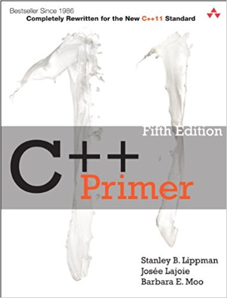
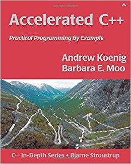
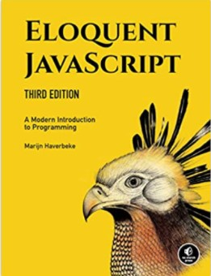

Computer Science
Tutorials Programming Languages C/CPP (1, 2), SICP
Bash trakcs (Tools Latex(in Chinese) Cool Stuff: Bash, vi(0,1), GDB/Valgrind |– Mathematics for CS : MIT |– Intro to AI : MIT |– Structure of Programs : MIT Courses |– Intro to Algorithms : MIT (2005), MIT (2011) |– Advanced Data Structure : MIT |– Program Performance : MIT |– Multicore : MIT
Good Readings
Operating System
Operating System Concepts, by Abraham Silberschatz, Peter B. Galvin, Greg Gagne
Network
Computer Networking: A Top-Down Approach, by James F. Kurose and Keith W. Ross
UNIX Network Programming (Vol 1 & 2), by W. Richard Stevens
Programming
Programming Languages
Pierce, Benjamin. Types and programming languages. The MIT Press, 2002.
Pierce, Benjamin & etc. Software Foundations. Online Book, 2014.
C
The C Programming Language
Pointers on C
C Traps and Pitfalls
Expert C Programming
C++
C++ Primer, Accelerated C++, The C++ Programming Language
C++ Templates
Effective C++, More Effective C++, Exceptional C++, More Exceptional C++, Effective STL
C++ Coding Standards, Exceptional C++ Style
Inside the C Object Model




The Definitive C++ Book Guide and List C++ Standard 2017 http://www.amazon.com/Clean-Code-Handbook-Software-Craftsmanship/dp/0132350882 http://www.cppreference.com/ http://www.cpp4u.com/
Java
JavaScript

Python
Python: Python + Ipython (廖雪峰，Learning Python, Python源码剖析)
Data Science: NumPy SciPy Pandas + Matplotlib (Python for Data Analysis)
Machine Learning: Scikit-learn
Deep Learning: Tensorflow + NLTK
Learning Python
Python Cookbook
Effective Python
Fluent Python
Include this in the first line of the python code: #! /usr/bin/env python
Every file of Python source code whose name ends in a .py extension is a module.
An attribute is simply a variable name that is attached to a specific object (like a module).
The build-in dir function can be used to list all the names available inside a module.
Everything in Python is an object, and almost everything has attributes and methods.
Six main build-in data types: numbers, strings, lists, dictionaries, tuples, and sets.
Literals are the expressions that generate objects, e.g., 'spam’ is a literal that generates a string object.
Both lists and dictionaries may be nested, can grow and shrink on demand, and may contain objects of any type.
Difference between lists and tuples: lists are mutable while tuples are immutable.
Python is dynamically and strongly typed: dynamic typing is a model that tracks the type automatically instead of requiring declaration code, and strongly typed is a constraint that you can perform only the operations that are valid for its type.
Reference acts like pointers.
math, random,
Data Structures and Algorithms
Steven S Skiena. The Algorithm Design Manual.
Robert Sedgewick, Kevin Wayne. Algorithms.
Thomas H. Cormen, Charles E. Leiserson, Ronald L. Rivest, Clifford Stein. Introduction to Algorithms.
Mark A. Weiss. Data Structures and Algorithm Analysis in C.
Linux and Utilities
Stevens, W. Richard & Rago, Stephen A.. Advanced Programming in the UNIX Environment (3rd ed.). Addison-Wesley, 2013.
Rochkind, Marc J.. Advanced UNIX Programming (2nd ed.). Addison-Wesley, 2004.
Kerrisk, Michael. The Linux Programming Interface: A Linux and UNIX System Programming Handbook. No Starch Press, 2010.
Love, Robert. Linux System Programming: Talking Directly to the Kernel and C Library (2nd ed.). O'Reilly, 2013
AEleen Frisch. Essential System Administration.
Jerry Peek, Shelley Powers, Tim O'Reilly, Mike Loukides. Unix Power Tools.
Organization
Cool Stuff: BMOW, Magic-1, D16/M, Mark 1 FORTH Computer
Operating Systems
http:linuxfromscratch.org/ Linux Kernel (1, 2) Unix Network Programming (1, 2, 3) 鸟哥的Linux私房菜